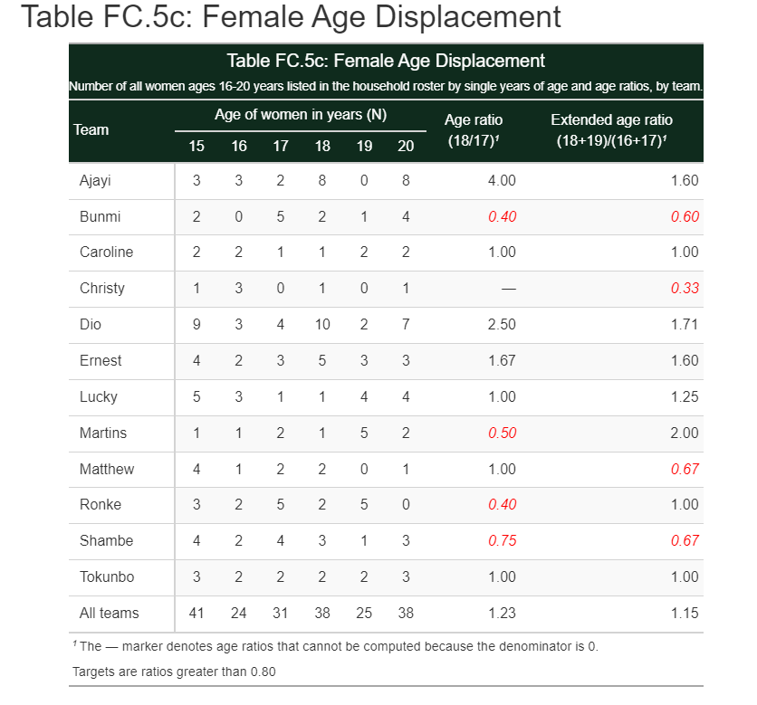

Acquisition
Reporting
Processing
Acquisition 📦
Reporting 🚧
Processing 📦
Downloads
For target questionnaire(s):
Downloads
Combines
For each questionnaire, combines data from multiple versions into a single set of data files containing all observations.
Downloads
Combines
Constructs
For certain questionnaires, creates data files in more convenient form than exported (e.g., a single file for food consumption rather than one for each food group).
HBS
Diary
Inventories
Inventories the data received by primary sampling unit, flagging cases with data shortfalls
Inventories
Monitors

Monitors trends in survey microdata that could undercut key survey indicators
Inventories
Monitors
Analyses
Analyses trends in survey paradata that could indicate problems (e.g., short interviews, answer changes, etc.). See example here
Checks
Checks for issues in incoming interview data.
Checks
Recommends
Recommends what to do with each interview: approve, review, reject, discuss with field staff due to persisent problems.
Checks
Recommends
Executes
Executes the process for rejection, if desired. This entails:
Checks
Recommends
Executes
Reports
Reports on identified issues in two ways. First, by creating files the flagged issues. Second, by generating a report of the top issues, the top reasons for rejection, and the number of rejections.